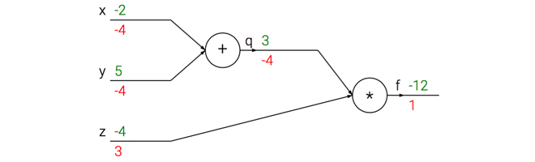

「CS231n Course 3」神经网络简介
Part 0 前言
参考资料：
Part 1 反向传播
反向传播，Back Propagation(BP)，是利用链式法则（chain rule）递归计算表达式的梯度的方法。
核心问题
对给定函数$f(x)$，其中$x$是输入数据的向量，需要计算函数$f$关于$x$的梯度$\nabla f(x)$。
目的
在神经网络中，$f$对应的是损失函数$L$，输入$x$中包含训练数据和神经网络的权重。
例子：对于SVM，损失函数是SVM的损失函数，输入包含了训练数据$(x_i, y_i), i=1 … N$，权重$W$，偏差$b$。训练集是给定的，权重是可以控制（更新）的变量。因此，在实践上，尽管可以计算输入数据$x_i$上的梯度，但是为了进行参数更新，通常只计算参数（如$W, b$）的梯度。而$x_i$的梯度在一些情形如可视化以直观理解时可以用上。
从（标量）简单表达式引入
考虑一个简单的二元乘法函数：
对$x$和$y$分别求偏导数：
（偏）导数的意义是，当函数变量在某个点周围的极小区域内变化，而导数是变量变化导致的函数在该方向上的变化率，数学定义如下：
梯度
梯度$\nabla f$是偏导数的向量，因此（继续上面的例子）有：
特别地，即使梯度实际上是一个向量，但通常仍会使用类似”$x$上的梯度“的（非正式）表述，而非”$x$的偏导数“的正确说法，这是因为前者更简单。
对加法求偏导
对$max$求导
该式说明如果该变量比另一个大，则梯度是$1$，反之为$0$。
使用链式法则计算复合表达式
对于复杂的包含多个函数的复合函数，如：
可以将其拆分为两个部分：
对其分别求偏导：
值得注意的是，$q$是我们构造的中间量，我们实际上不关心$q$（即，不关心$\frac{\partial f}{\partial q}$），而关心$f$关于$x,y,z$的梯度。链式法则（chain rule）给出了对于求解$f$关于$x,y,z$梯度表达式的方式：通过相乘。如：
计算图例子

- 前向传播：绿色数字是量的值，从左到右进行依次通过算子（节点（node）/门（gate））
This is copyright.